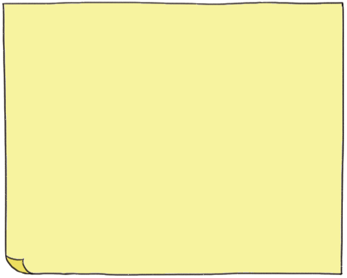
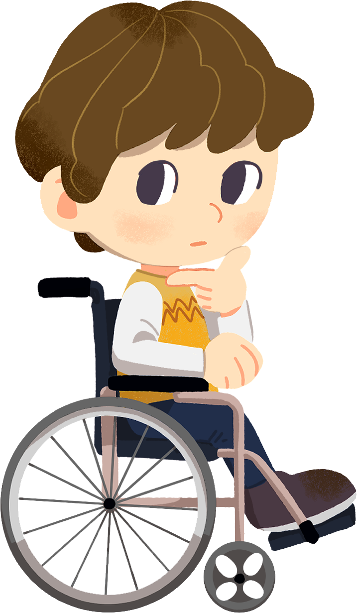
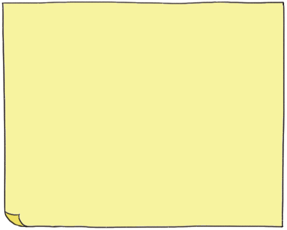

- 활동 1
- 활동 2
- 활동 3
-
-

소희의 입장에서 생각해 보면
은채가 다른 친구들과 놀이터에 놀러 갔다고말하지 않은 것은
친구
일이야.
왜냐하면
자기에게 거짓말을 하고 놀이터에 놀러 갔다고 생각할 수 있기 때문이야.
-
추가 질문
은채의 입장에서 생각해 보면
다른 친구들이 놀이터에 가자고 자꾸 조르면함께 놀고 싶은
일이야.
왜냐하면
다른 친구들과도 좋은 관계를 유지해야 하기 때문이야.
-

-
직접 만나 상황을 이야기하고 사과합니다.
은채의 마음을 잘 알고 있는 친구가 소희에게 말해 줍니다.
싸움이 커지기 전에 선생님께 도움을 요청합니다.
-
추가 질문
해결 방법 장점 단점 보완 방법 선생님께
도움을 요청 한다.선생님 앞이라 차분하게 대화할 수 있다.
솔직하게 말하기
어려울 수도 있다.선생님께 말씀드리기 전에 둘이 먼저 이야기를 나누고 어려울 경우 도움을 요청한다.